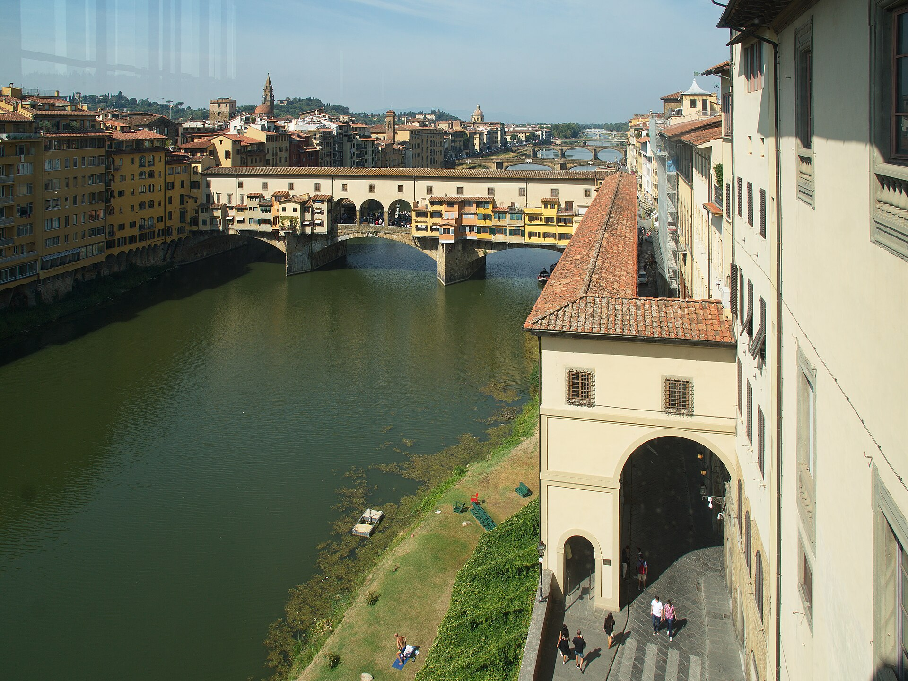
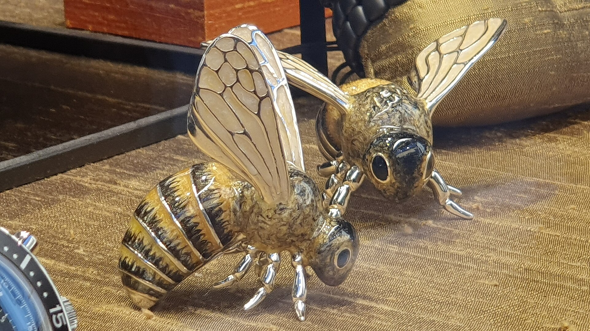
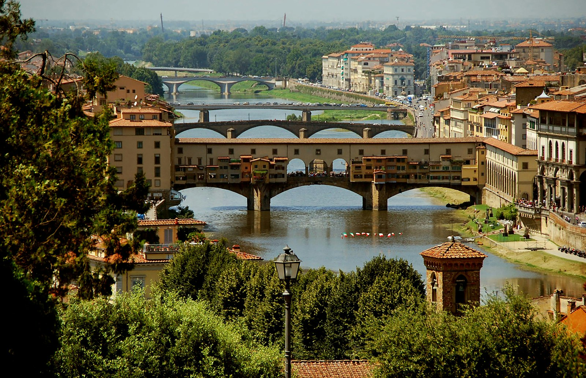

阿诺河上最古老的桥（1345 年重建），也是全城唯一躲过 1944 年德军爆破的桥。桥上两排珠宝店从 16 世纪延续至今--桥的上层还藏着一条美第奇家族的空中走廊瓦萨里走廊，从乌菲兹直通碧提宫。
看点路线
Il Percorso
- 1桥中央 Cellini 半身像小广场：两侧各拍一张河景
- 2抬头看桥上层：瓦萨里走廊的窗子
- 3西面（下游）桥头看三层桥屋叠出的天际线
- 4夜晚灯下从圣三一桥拍老桥倒影
桥上看点
Il Ponte · 4 个细节

瓦萨里走廊
科西莫一世为儿子的婚礼而建：一条 1 公里的空中走廊，从旧宫穿过乌菲兹、跨过老桥、直抵碧提宫。大公从此不必混入平民街道。走廊中段跨桥的三扇大窗是墨索里尼 1939 年为陪希特勒观景开的--那次参观，救了这座桥的命。

金匠行会桥
桥上最初是肉铺（内脏直接扔河里），1593 年费迪南多一世大公受不了陪家族走走廊时闻到肉腥与腐味，下令屠夫全部迁出、只留金匠--珠宝桥 430 年未改行。今天橱窗里仍然是金匠世家。

切利尼半身像
桥中央的喷泉小广场立着金匠大师切利尼（Benvenuto Cellini，代表作珀尔修斯）的半身像--1901 年金匠行会捐赠。四个角上的青铜小像被摸得发亮：金匠们的“行业守护神”打卡点。
背立面与“额外楼层”
从西面桥头看：桥屋向河面悬挑出阳台、凉廊与后厨，像一排筑在石桥上的鸟巢。这些“违章加建”经历了 500 年洪水考验（1966 年大洪水淹到桥拱以上）--中世纪结构工程的隐性奇迹。
历史故事
Le Storie
壹1944：德军炸掉了所有桥，除了它
1944 年 8 月 4 日，撤退的德军炸毁阿诺河上全部桥梁以阻断盟军--老桥是唯一例外。流传最广的说法是：1938 年希特勒在墨索里尼陪同下走过瓦萨里走廊并眺望老桥，对这座“桥上之城”印象深刻，亲口下令保留。
德军的替代方案同样残忍：炸毁桥两端的街区，用瓦砾堵住通行。今天桥两头狭窄的巷道与“新”旧建筑，就是那次爆破的伤口愈合后的疤痕。
1966 年大洪水时，老桥又一次被考验：河水漫过桥拱，桥屋进水，但桥身无损。一座 1345 年的石桥，扛住了战争与洪水。
贰锁与爱：被立法清除的浪漫
2000 年代，情侣们在桥上（尤其是 Cellini 像周围栏杆）挂爱情锁、扔钥匙--重量一度威胁护栏结构，市政府立法清除并罚款。
今天栏杆干干净净，但黄昏仍能看到有情侣试探性地摸出锁。城市的浪漫需要基础设施的承载力来配平--这是老桥给现代城市治理出的题。
黄昏 18:00-19:30 从下游的圣三一桥看老桥：桥屋轮廓被夕阳描金，河水把倒影拉长--佛罗伦萨的免费压轴节目。
叁金匠桥的“气味改革”
桥上最初是肉铺：内脏与废料直接扔进阿诺河，中世纪的桥是全城最臭的地方之一。
1593 年，大公费迪南多一世受不了陪家族走瓦萨里走廊时闻到的肉腥与腐味，下令屠夫全部迁出、只留金匠--珠宝桥 430 年未改行。
一次气味驱动的产业升级，成就了今天橱窗里那些金匠世家--市政规划史里最香的一页。
肆瓦萨里走廊：权力的通勤路
1565 年，科西莫一世为儿子弗朗切斯科与奥地利的约翰娜的婚礼，命瓦萨里 5 个月建成一公里空中走廊：从旧宫穿过乌菲兹、跨过老桥、直抵碧提宫。
大公从此不必混入平民街道--安全与体面一次解决。走廊里后来挂满 17-18 世纪画家自画像（含拉斐尔与鲁本斯），是世界上最重要的自画像收藏之一。
走廊中段跨桥的三扇大窗，是 1939 年墨索里尼为陪希特勒观景开的--那次参观，无意中救了整座桥（见二战故事）。
伍切利尼：桥上的守护神
桥中央的喷泉小广场立着切利尼半身像（1901 年金匠行会捐赠）--这位雕塑了《珀尔修斯》的金匠大师，是全行业的精神图腾。
四个角上的青铜小像被摸得发亮：金匠学徒出师前要来摸一次“行业认证”。
切利尼本人在自传里吹过的牛（铸铜 disasters 自救那次）至今是 metallurgy 的传说--桥上这位，是艺术史上最会讲自己故事的人。
陆桥屋的“违章建筑史”
从西面桥头看：桥屋向河面悬挑出后厨、厕所与阳台，像一排筑在石桥上的鸟巢--这些“加建”从 15 世纪就开始了。
市政多次下令拆除“危险外挑”，全被居民与店主用“已建成事实”耗赢--今天的立体轮廓，就是五百年“违建”协商的结果。
其中一间后厨 1966 年被洪水整体冲走，屋主后来在原位重建并立了小牌--桥屋的每一次损失与修补都有记录，这座桥自带档案。
柒曼弗雷迪与“桥上的决斗”
中世纪的桥面曾宽到能跑马、决斗与摆市场：编年史里记过不止一次在桥上“按古法解决荣誉问题”的决斗。
桥中央当年有一道门（夜间锁桥），1345 年的石桥建成后，桥头堡的城门直到 13? 世纪仍在夜间关闭--桥既是街市也是城防。
今天的桥面宽度还能看出旧格局：中段突然放宽的地方，就是当年“公共广场”的位置。
捌洪水刻度线：1966 的记忆
老桥附近建筑的墙上有多处 1966 年洪水的刻度线--水位高出正常河面 4 米以上，部分桥屋二层进水。
那场洪水摧毁了城中数千件艺术品，也让“泥天使”志愿者名扬世界。老桥本身扛住了主洪峰，但一家金店被冲毁，店主在下游 30 公里外找回了保险柜。
找桥西头小巷墙上的铜牌：那是佛罗伦萨人给洪水钉的“记忆钉”。
玖“窗景经济”：最贵的视野
老桥上的商铺租金数百年都是全城最贵--中世纪的银行家（美第奇家族的起点就在桥边）、今天的金匠，都懂“窗景即品牌”。
莎士比亚《威尼斯商人》里“里亚托”式的金融街气质，老桥在佛罗伦萨完整复刻过：桥上有过银行柜台、公证人与货币兑换桌。
今天橱窗里的金饰定价含 20-30% 的“桥景费”--懂行的本地人会去两街之隔的店内买同款。
拾拍摄老桥的四个机位
机位一：下游的圣三一桥（Ponte Santa Trinita）拍老桥全景--黄昏最佳。机位二：上游的卡瑞拉桥拍暮色与水流。
机位三：老桥中段两侧拱窗拍阿诺河两岸--注意这是唯一不用三脚架也稳定的点位（窗台可借力）。
机位四（冷门）：碧提宫一侧的波波里花园 Belvedere 要塞俯拍--桥与河湾一起入镜，多数攻略不会告诉你。
参观贴士
Consigli Pratici
- 店铺约 10:00 开门，上午桥上人少适合拍照；黄昏光线最佳
- 买金银饰品请认准店铺营业执照与含金量钢印，桥上溢价高于城内
- 瓦萨里走廊（含乌菲兹段）需预约导览，季节性开放、票紧张，提前 1 月官网抢
- 最佳机位：圣三一桥（下游）拍老桥全景 + 天主圣三桥上游拍暮色
- 桥面窄、扒手活跃，背包前置
顺路同游
Da Non Perdere